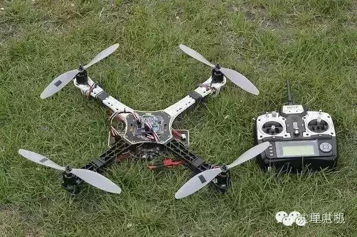
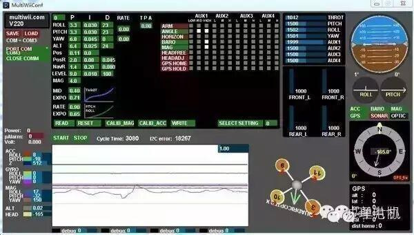
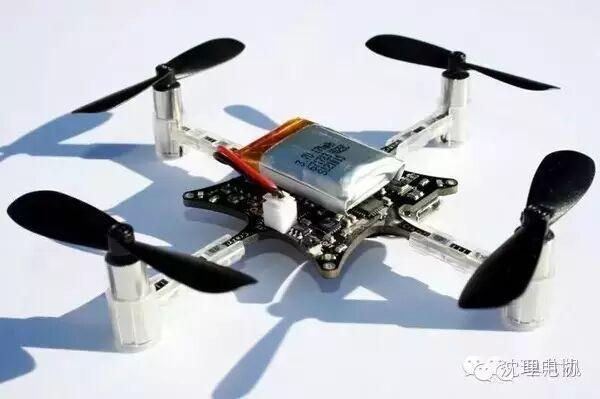
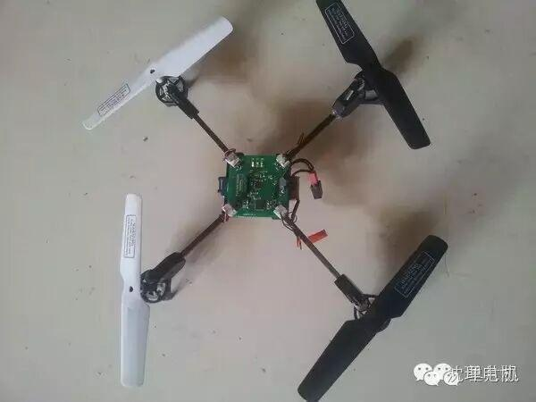

DIY四轴飞行器

格氏11.1V2200mA25C锂电 128
B6充电器 160
郎宇A2212电机 62×4
螺旋桨8个 40 (需要4个正浆，4个反浆，万一坏了呢剩下备用)
天行者20A电调 48×4
四轴机架 88
飞控板 100 (KK/MWC等等总要玩个开源飞控吧？否则光调参数你都不好意思说出口)
天地飞6遥控器 200（6通道 遥控器）
我们把四轴组装起来（会简单的电路焊接就可以了）就可以连接上位机通过电脑调试参数了。

调试主要是PID参数，一般买的飞控简单调调就可以试飞了。日后还可以加GPS神马的玩些高端的定点飞行！
大四轴一定要有一个安全的调试环境，东西要装牢靠，周围不要有行人。还有就是！一旦发生问题千万不要用手去抓四轴!!!!
看到有些人调四轴都带护目镜保护眼睛以防螺旋桨断了射出去！！！高速旋转的螺旋桨就像子弹一样，不要以为是玩就没有安全隐患了，绝不要掉以轻心！小四轴
作为屌丝学生党，大四轴我暂时是玩不起的。于是我就想别的办法，反正都是四轴，小的是不是便宜些又安全些？
小四轴不仅没有电调，连机架都剩了，电机装在电路板上：

没有大四轴飞起来霸气，不能载重。但小四轴有个优点就是想飞就飞，一不受空间限制，二不容易伤人。即使你用手抓螺旋桨，那感觉基本也就是挠痒痒。

四轴有个小机架(碳杆+空心杯电机+减速齿轮) 也不贵，几十块钱。
现在看到越来越多的人都开始玩小四轴了，我的四轴就是根据论坛的开源四轴一步步制作的。
分享几个开源四轴的资料：
国外的:
crazyflie：http://www.bitcraze.se/
国内的:
匿名四轴：不思带你【从零开始】做四轴！！！(强势整理搬运版)
圆点博士：圆点博士微型四轴飞行器: http://www.etootle.com/product/flight-kit.html
我的博客四轴文章列表 从零做四轴飞行器：http://www.wellmakers.com/430/
以及CrazePony四轴飞行器项目：http://www.crazepony.com/ 。